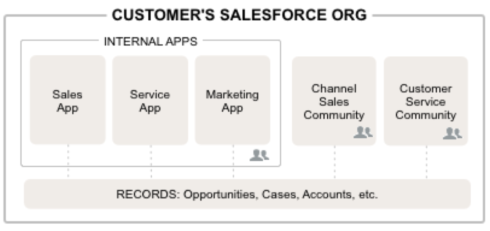

This site is a place for me to post my music, interests, and professional information. In the links above you'll find more content. Info has information about me and my university/professional experience. My Music takes you to some of my YouTube guitar cover videos and recorded songs from SoundCloud. Enjoy!
By Mathew Ruff
Introduction to Communities (From Salesforce Documentation) - Watch a Demo: Setting Up Your Salesforce Community (5:59 minutes)
Communities are branded spaces for your employees, customers, and partners to connect. You can customize and create communities to meet your business needs, then transition seamlessly between them. Communities are a great way to share information and collaborate with people outside your company who are key to your business processes, such as customers or partners.
You can use Communities to:
Drive more sales by connecting your employees with your distributors, resellers, and suppliers
Deliver world-class service by giving your customers one place to get answers
Manage social listening, content, engagement, and workflow all in one place
You can create multiple communities within your organization for different purposes. For example, you could create a customer support community to reduce support costs, or a channel sales community for partner deal support, or you could have a community specifically dedicated to an upcoming event.
Communities may contain a subset of features and data available in your internal Salesforce organization and can be customized to use your company branding. In addition, you can choose which members from your company and which customers, partners, or other people outside your company can join.
Communities live inside your organization and are easily accessed from a drop-down menu in the top left corner of Salesforce. Use this menu to switch between your communities and your internal Salesforce organization.
 ...Read More